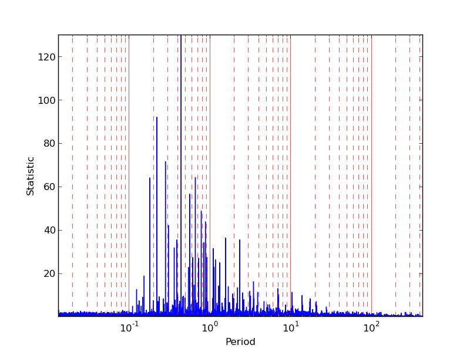

(the periodogram with multi-harmonic function fitting)
I present source codes that were used in the following paper:
Efficient Period Search for Time Series Photometry
(Min-Su Shin and Yong-Ik Byun, JKAS, 37, 79, 2004)
We developed an algorithm to identify and determine periods of
variable sources. With its robustness and high speed, it is
expected to become an useful tool for surveys with large
volume of data. This new scheme consists of an initial coarse
process of finding several candidate periods followed by a
secondary process of much finer period search. With this multi-step
approach, best candidates among statistically possible periods are
produced without human supervision and also without any prior
assumption on the nature of the variable star in question. We tested
our algorithm with 381 stars taken from the ASAS survey and the result
is encouraging. In about 76% cases, our results are nearly identical
as their published periods. Our algorithm failed to provide convincing
periods for only about 10% cases. For the remaining 14%, our results
significantly differ from their periods. We show that, in many of
these cases, our periods are superior and much closer to the true
periods. However, the existence of failures, and also periods sometimes
worse than manually controlled results, indicates that this algorithm
needs further improvement. Nevertheless, the present experiment shows
that this is a positive step toward a fully automated period analysis
for future variability surveys.
ADS |
PDF
The code used in the paper is composed of two parts: a rough period estimation by analysis of variance and polynomial function fitting and a refined determination of period using spline interpolation. The original code of the first part has been developed by Alex Schwarzenberg-Czerny and I modified the code for my research. You can get the orginal code from his web page. Carl W. Akerlof has developed an original code of the second part. The code was also modified and combined with the first part in my research. I am thankful that Alex and Carl permit me to post the related codes here.
If you need to understand the details of the related algorithms, the following papers have to be referenced and cited.
Application of cubic splines to the spectral analysis of unequally spaced data
(Akerlof et al., ApJ, 436, 787, 1994) :
ADS
ROTSE All-Sky Surveys for Variable Stars. I. Test Fields
(Akerlof et al., AJ, 119, 1901, 2000) :
ADS
Carl's code
On the advantage of using analysis of variance for period search
(Schwarzenberg-Czerny, MNRAS, 241, 153, 1989) :
ADS
Fast and Statistically Optimal Period Search in Uneven Sampled Observations
(Schwarzenberg-Czerny, ApJ, 460, 107, 1996) :
ADS
Alex's code
The package posted on this web page is exactly same as that used in my paper
You can download my code:
[Current stable version: ver 3.5 released in Aug. 2013] MS_Period.tar.gz |
README
(Please, check the README file before you download or install the code as well as the paper.)
The current version supporting OpenMP has been developed to exploit
the current CPUs that have multiple cores.
For the object shown in the following plots,
the version with OpenMP support with 8 cores is about 11 times faster than the serial version, comparing wall-clock time.
(the example raw light curve)
(the light curve in phase space with the found period 0.435801 day)
(the periodogram with multi-harmonic function fitting)

(the periodogram with phase folding and AoV)
The following light curve is used to test the methods. The correct period is 34.3 days.
(the periodogram with multi-harmonic function fitting)
(the periodogram with phase folding and AoV)
You can freely modify and distribute the codes that are not parts of Carl or Alex's original work. But please, let me know what you changed or what kind of problems you have.
I am really grateful for the permission of Carl W. Akerlof and Alex Schwarzenberg-Czerny to post the parts of their codes on this web page. Please, cite their relevant papers as well as mine when you use the codes.
You might be interested in the following papers and codes too.
"A FAST CHI-SQUARED TECHNIQUE FOR PERIOD SEARCH OF IRREGULARLY SAMPLED DATA"
David M. Palmer 2009 ApJ 695 496-502
http://public.lanl.gov/palmer/fastchi.html
The VARTOOLS Light Curve Analysis Program (developed by Joel D. Hartman)
http://www.cfa.harvard.edu/~jhartman/vartools/
Period04 (developed by Patrick Lenz)
http://www.univie.ac.at/tops/Period04/index.html
The following paper also might be useful. The paper summarizes various statistics for
period estimation.
- On period determination methods, Heck, A., Manfroid, J., & Mersch, G.,
1985, A&A Suppl. Ser., 59, 63
- Periodicity detection in irregularly sampled light curves
by robust regression and outlier detection,
Thieler et al., 2013, Statistical Analysis and Data Mining,
Volume 6, Issue 1, pages 73-89
--------------------------------
Period estimation by the minimum length method
This method is discussed well in Dworetsky (1983)
. Simply, if a trial period is
correct, the phase diagram with the trial period must produce a well-aligned light curve
in phase space having the least length. The file
Period_length.tar.gz includes a source code and a simple shell script. But
the file doesn't include "minmax" program which is also used in the above package.
Please, check the explanation given in the README file for the above package. This
method is quite fast. I do not build an OpenMP version for this code.
In addition to the scaling rule of magnitude recomended in Dworetsky (1983), I
added seven different scaling methods (see the source code). The following
plots show the example distribution of lengths for a range of trial periods with the sine light curves.
(scaling 0)
 (scaling 1)
(scaling 2)
(scaling 3)
(scaling 4)
(scaling 5)
(scaling 6)
(scaling 7)
(scaling 8)
(scaling 1)
(scaling 2)
(scaling 3)
(scaling 4)
(scaling 5)
(scaling 6)
(scaling 7)
(scaling 8)
This method works well with this well-sampled sine curve. But when I applied this method to
the above example with the period 0.435801 day, the method couldn't find the correct period
as shown in the following plots of length distribution for trial periods.
(scaling 0)
(scaling 1)
(scaling 2)
(scaling 3)
(scaling 4)
(scaling 5)
(scaling 6)
(scaling 7)
 (scaling 8)
(scaling 8)
--------------------------------
Period estimation by using the String/Rope length method with the Kafler-Kinman statistic
This approach was explained in Clarke (2002).
In principle, this statistic is same as von Neumann statistic. The
code can be downloaded. The following figures show periodograms with this method
for the above two examples of the sine curve and the ASAS light curve.
--------------------------------
Detecting variability in astronomical time-series data
The idea of this multi-step approach is basically based on the fact that a correct period is not found by only statistical measurements without physical nature of variable objects. Prof. Yong-Ik Byun and I intended to develope this package with consideration of detecting variable objects in time-series data and classifying them together. The detection of variable objects has been discussed in a related conference proceeding
Variability Detection of Time Series Data in the Virtual Observatory Era
(7th Pacific Rim Conference on Stellar Astrophysics, 2005)
(PPT file) |
(PDF file)
Infinite Gaussian Mixture models and clustering methods have been
applied to discover new variable candidates:
Detecting variability in massive astronomical time series data - I. Application of an infinite
Gaussian mixture model, Shin et al., 2009, MNRAS, 400, 1897,
Detecting Variability in Massive Astronomical Time-series Data. II. Variable Candidates
in the Northern Sky Variability Survey, Shin et al., 2012, AJ, 143, 65.
--------------------------------
Some notes on developing the codes
I have tried to follow the Unix philosophy when developing various codes.
"Write programs that do one thing and do it well. Write programs to work together.
Write programs to handle text streams, because that is a universal interface."
- Doug McIlroy
(see Wikipedia about
the Unix philosophy.)
Therefore, there are many parts of the codes that you can optimize for your specific work.
The current codes support only basic features. User interface has not been a main focus.
You can also increase speed by improving I/O parts of the codes.
--------------------------------
Min-Su Shin (msshin @ kasi.re.kr)